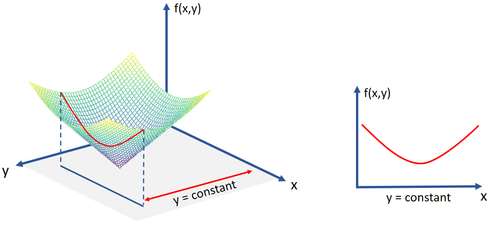
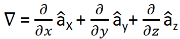

f(x,y) = x2 + xy

f(x,y) = x2y3

HOME BLOG EBOOKS ABOUT CONTACT SHOP
For a single variable function, the derivative measures the change in the function value with respect to the independent variable. The partial derivative is the equivalent of the ordinary derivative for multi variable functions. It measures the change in the function value with respect to any one of the variables.
The partial derivative with respect to any one variable is calculated simply by taking ordinary derivative, keeping the other variables constant. Partial derivative of a function f with respect to x, y & z are denoted as ∂f/∂x, ∂f/∂y & ∂f/∂z respectively.
By considering the other variables as constant, we are essentially reducing the multi variable function to a single variable function (as shown below).

f(x,y) = x2 + xy
f(x,y) = x2y3
Using partial derivatives, we can define a new operator called the del or the nabla operator, denoted by the symbol ∇. In Cartesian coordinates, the del operator is defined as:

∇ isn’t really a vector, it is rather a differential operator. When applied to a single variable function, it is the same as the standard derivative and hence it's of no particular relevance. But for a multi-variable function, it can be applied in 3 different forms (gradient, divergence, curl) and each of these forms has a different significance and are very important as far as engineering is concerned.